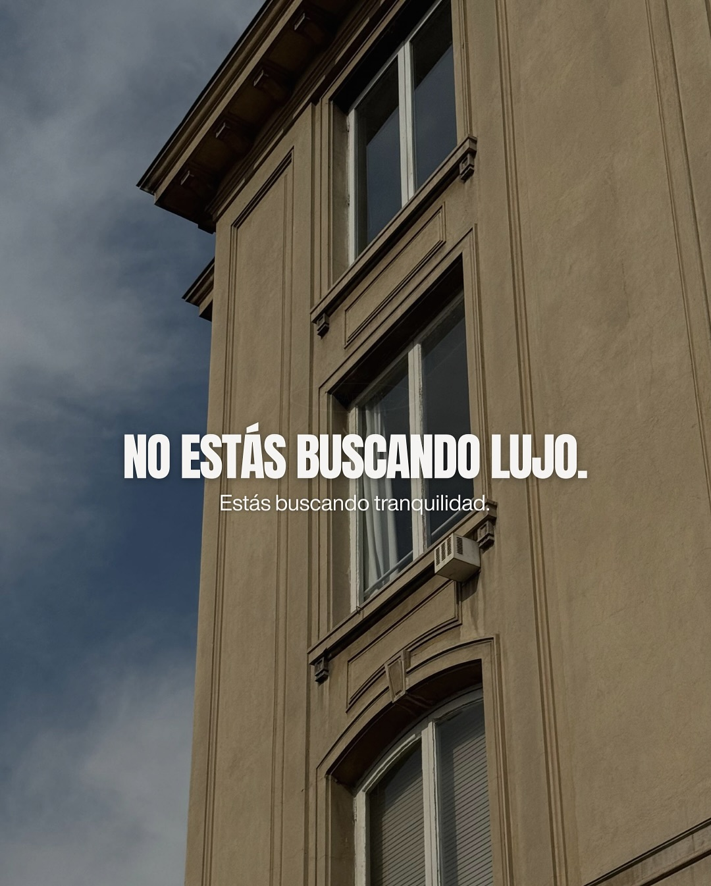
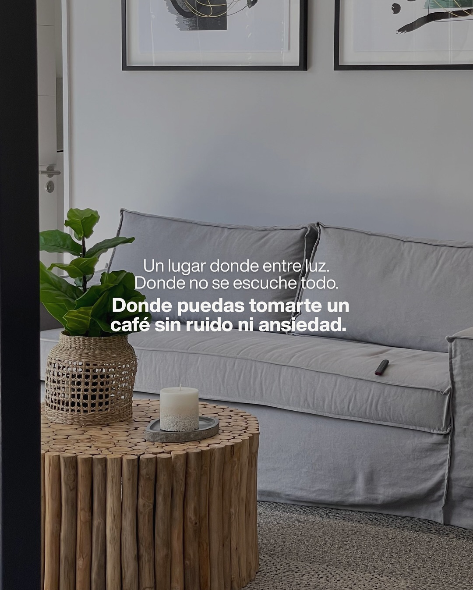
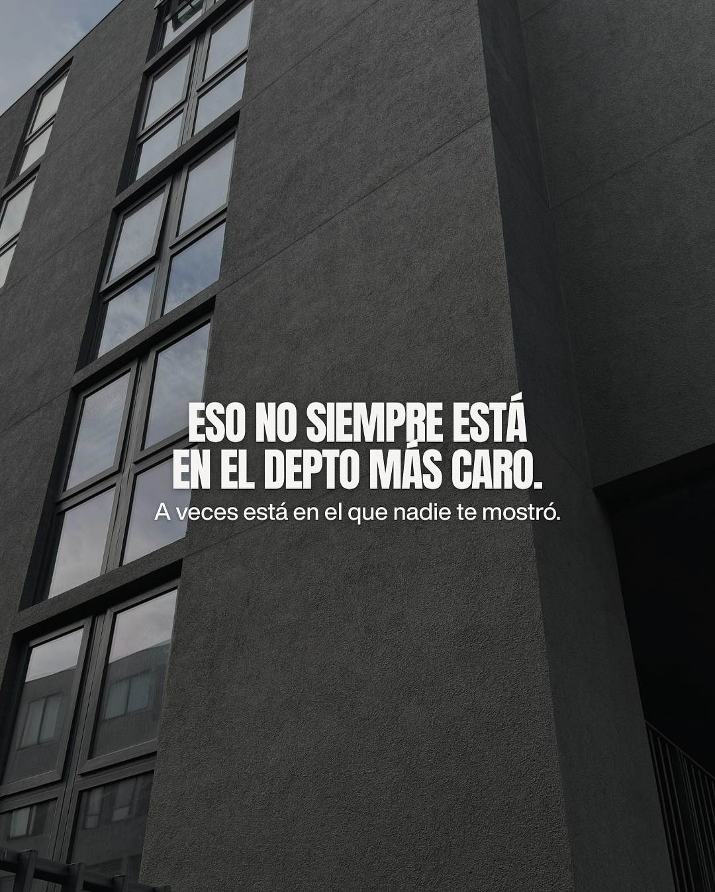
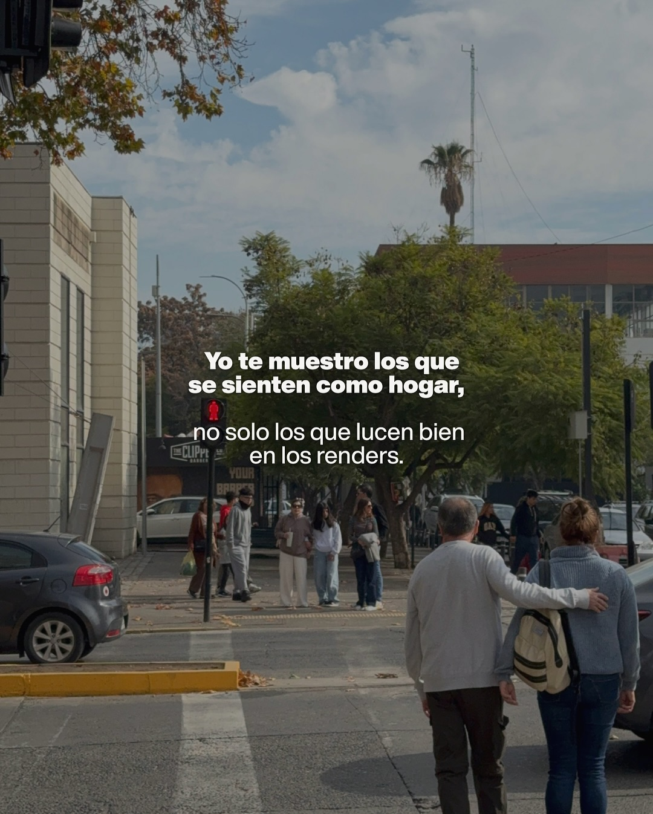
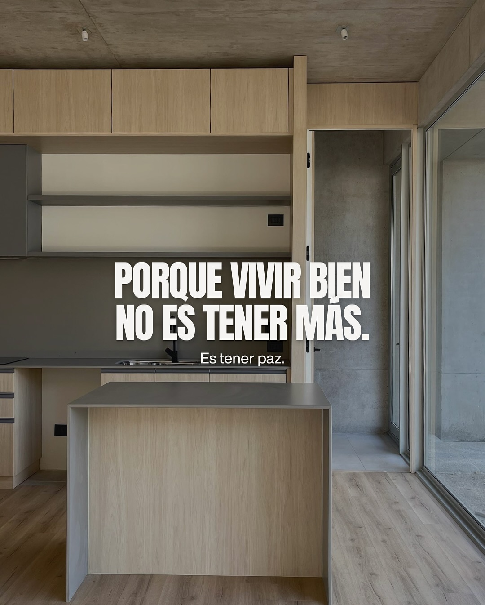
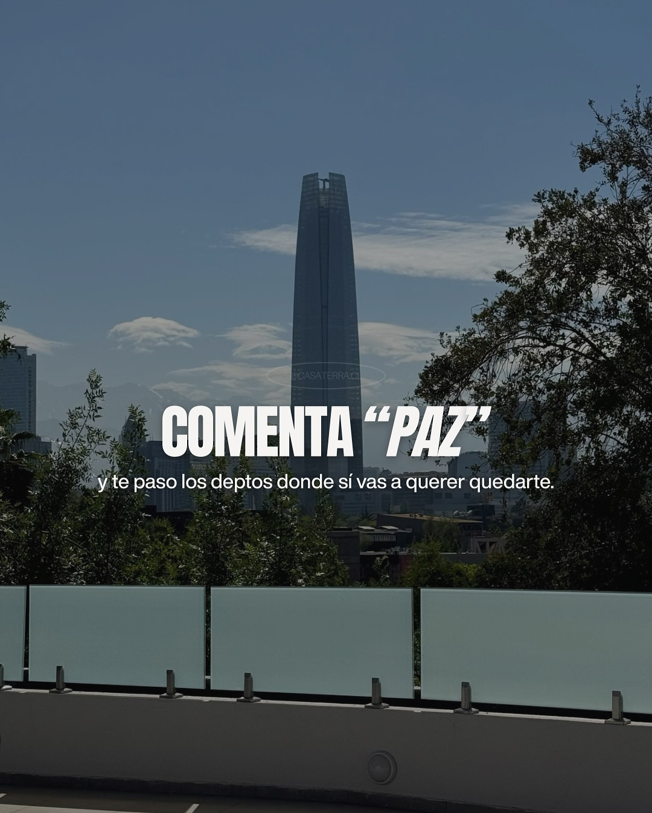

Casaterra
Estrategia Orgánica Meta & TikTok · Agencia Eunoia
Casaterra es una inmobiliaria chilena con un público definido: jóvenes y familias que están en la búsqueda de su primera propiedad. Para conectar con ellos, convertí la información inmobiliaria —normalmente densa, fría y llena de tecnicismos— en contenido cercano, útil y altamente compartible. Partí de insights reales: sus dudas, temores y motivaciones. Luego lo fusioné con trends, formatos dinámicos y una narrativa más humana, logrando que temas complejos fluyeran naturalmente en el feed. Y cuando tocaba hablar de ventas, se hizo con estrategia: sin urgencias forzadas, mostrando valor, aclarando procesos y guiando de forma clara. Resultado: mayor crecimiento de comunidad, más interacción y un aumento sólido en leads calificados.
Reels
Carruseles






← Desliza para ver más →